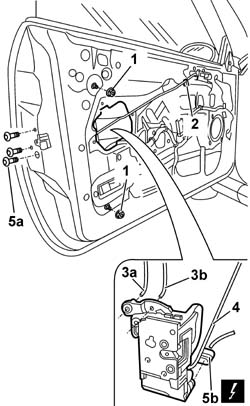

7005N20 FRONT SIDE DOOR LOCK MOTOR/CATCH ASSEMBLY - RR WITH DOOR PANEL AND SUPPORT FRAME REMOVED
- Path
- Procedures > 70 FITTINGS > 7005 PASSENGER COMPARTMENT FRONT SIDE DOORS > 7005N FRONT DOOR CENTRAL LOCKING SYSTEM > 7005N20 FRONT SIDE DOOR LOCK MOTOR/CATCH ASSEMBLY - RR WITH DOOR PANEL AND SUPPORT FRAME REMOVED
- Kind
- repair procedure (removal / refitting; the operation number is the code)
- Applies to
- all engines; all production periods
- Interactive page
- https://sloeber94.github.io/elrnDB-aGt/en/#/125001798
Applies to: all engines; all production periods
 Removing
Removing
 Refitting
RefittingOp. 5570T90 FRONT SPEAKER - R R
Op. 7005M40 FRONT ELECTRIC WINDOW SYSTEM ECU - R+R FOLLOWING ELECTRICAL WIRING CHECK
Op. 7005A04 FRONT SIDE DOOR WATER GUARD PROTECTION - R R OR REPLACE WITH DOOR PANEL REMOVED
Op. 7005E91 PARTITION ON ONE FRONT DOOR (LH OR RH) - R R WITH DOOR PANEL REMOVED
Op. 7005D26 FRONT SIDE DESCENDING WINDOW GLASS SCRAPER (OUTER) R R
Op. 7005D14 FRONT SIDE DOOR DESCENDING WINDOW GLASS - R R WITH DOOR PANEL (AND MOUNT FRAME) REMOVED
Op. 7005C52 INTERIOR OPENING HANDLE - R R
1. Undo the two nuts fixing the rear window guide to allow the subsequent extraction of the lock.
2. Disconnect the internal opening rod from the retainer.
3. Disconnect the connecting rods (3a) and (3b) with the outer handle from the lock side.
4. Disconnect the internal opening rod from the lock.
5. Undo the bolts fixing the lock (5a), extract it and disconnect the electrical connector (5b).
Name | Connector | |
|---|---|---|
5b | Front driver's door lock geared motor | See N50 RIGHT FRONT DOOR LOCK LEFT |
Name | Connector | |
|---|---|---|
5b | Passenger side front door lock geared motor | See N51 RIGHT FRONT DOOR LOCK MOTOR |

Applies to: all engines; all production periods
Refitting
RemovingCheck that the lock is intact and undamaged.
Connect the internal opening idler rod to the lock.
Connect the electrical connection to the lock.
Name | Connector | |
|---|---|---|
- | Front driver's door lock geared motor | See N50 RIGHT FRONT DOOR LOCK LEFT |
Name | Connector | |
|---|---|---|
- | Passenger side front door lock geared motor | See N51 RIGHT FRONT DOOR LOCK MOTOR |
Position the lock and rod.
Connect the connecting rod with the outer lock on the lock side.
Connect the connecting rod with the outer handle from the lock side.
Tighten the catch retaining bolts.
 | Fastening | Component | Ø | Value (daNm) |
|---|---|---|---|---|
- | Bolt | FRONT DOOR LOCK MECHANISM | M8 | 1.6 |
Tighten the two nuts fixing the rear electric window guide.
| Fastening | Component | Ø | Value (daNm) |
|---|---|---|---|---|
- | Nut | FRONT ELECTRICALLY OPERATED WINDOW MECH | M8 | 16 |
Check that the lock works by operating the outer handle.
Op. 7005C52 INTERIOR OPENING HANDLE - R R
Op. 7005D14 FRONT SIDE DOOR DESCENDING WINDOW GLASS - R R WITH DOOR PANEL (AND MOUNT FRAME) REMOVED
Op. 7005D26 FRONT SIDE DESCENDING WINDOW GLASS SCRAPER (OUTER) R R
Op. 7005E91 PARTITION ON ONE FRONT DOOR (LH OR RH) - R R WITH DOOR PANEL REMOVED
Op. 7005A04 FRONT SIDE DOOR WATER GUARD PROTECTION - R R OR REPLACE WITH DOOR PANEL REMOVED
Op. 7005M40 FRONT ELECTRIC WINDOW SYSTEM ECU - R+R FOLLOWING ELECTRICAL WIRING CHECK
Topics linked from this page (7)
- 5570T90 FRONT SPEAKER - R R
- 7005A04 FRONT SIDE DOOR WATER GUARD PROTECTION - R R OR REPLACE WITH DOOR PANEL REMOVED
- 7005C52 INTERIOR OPENING HANDLE - R R
- 7005D14 FRONT SIDE DOOR DESCENDING WINDOW GLASS - R R WITH DOOR PANEL (AND MOUNT FRAME) REMOVED
- 7005D26 FRONT SIDE DESCENDING WINDOW GLASS SCRAPER (OUTER) R R
- 7005E91 PARTITION ON ONE FRONT DOOR (LH OR RH) - R R WITH DOOR PANEL REMOVED
- 7005M40 FRONT ELECTRIC WINDOW SYSTEM ECU - R+R FOLLOWING ELECTRICAL WIRING CHECK